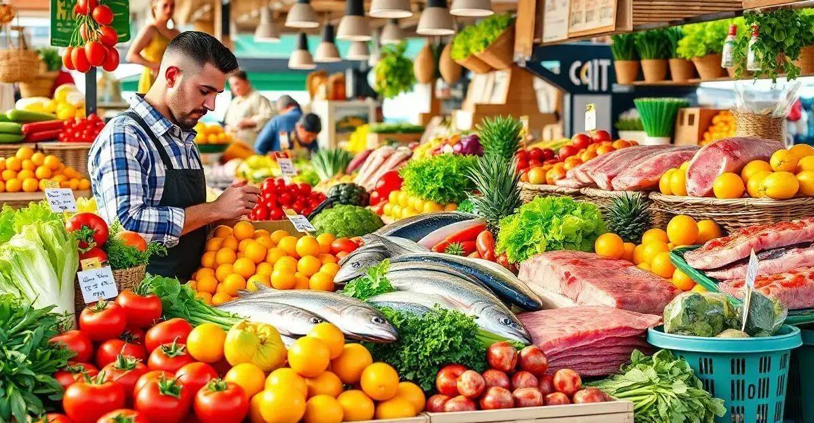
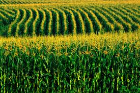

🌽 Alimentos frescos para a cidade
A produção rural é a base da alimentação nas cidades. Frutas, verduras, grãos e carnes chegam diariamente aos centros urbanos graças ao trabalho no campo.


🚜 Economia e abastecimento
O setor agrícola movimenta a economia, gera empregos e garante o abastecimento de supermercados, feiras e restaurantes nas áreas urbanas.
🌍 Sustentabilidade e equilíbrio
Uma produção rural sustentável contribui para o equilíbrio ambiental e para o bem-estar da população urbana, com alimentos de qualidade e respeito à natureza.